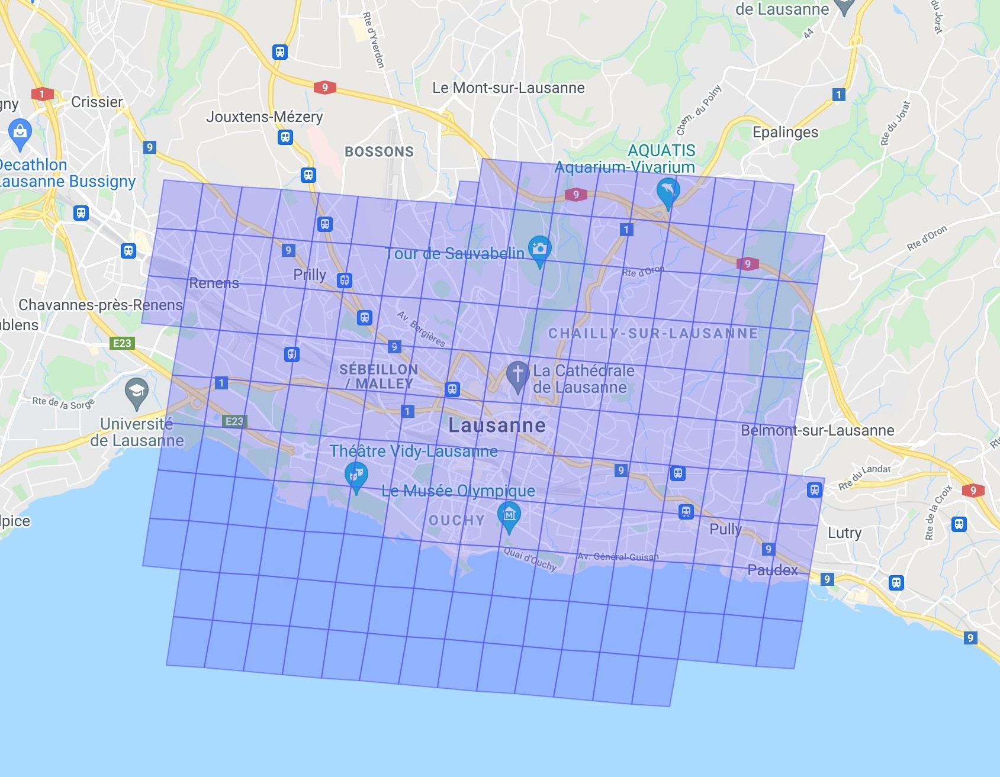

Pour une meilleure compréhension de la carte et de ses fonctionnalités
À l'heure actuelle, il existe plus de 26'600 points d'intérets (appelés ci-après POI) dans les 5 cantons de la Suisse romande que sont Vaud, Genève, Fribourg, Neuchâtel et Valais. Pour des questions de fluidité (et parce qu'il existe à ce jour, plus de 26'600 POI toute la Suisse Romande), les POI sont regroupés géographiquement par des cercles de différentes couleurs (de vert à rouge selon leur densité). Pour voir individuellement ces POI, il suffit d'agrandir la carte.
Il existe plusieurs boutons à disposition :
La carte du monde peut être découpée sous forme de quadrilatères (généralement des parallélogrammes) que l'on appelle des cellules.
 Ci-dessus un exemple des cellules S14 . Afin de visualiser ces niveaux de cellules, le site de sidewalklabs peut vous être utile.Ce sont les cellules "S2" qui déterminent l'apparition ou non d'un POI dans le jeu "Pokémon GO". Dans ce jeu, deux niveaux de cellules sont importantes : Cellules S14 (ou niveau 14) Les cellules S14, représentées par des quadrilatères rouges sur la carte, permettent de déterminer le nombre d'arènes en fonction du nombre de POI dans ces cellules. Cela suit le schéma suivant :
Il existe néanmoins des exceptions où l'on peut retrouver plus de trois arènes dans une cellule S14. Cellules S17 (ou niveau 17) Les cellules S17, représentées par des quadrilatères verts sur la carte, permettent de déterminer le nombre de POI. Généralement, il n'existe qu'un pokéstop, ou arène, ou arène EX dans ces cellules mais il arrive d'en trouver plusieurs dans une même cellule S17.
À quelle fréquence la carte sera-t-elle mise à jour ? Environ tous les mois